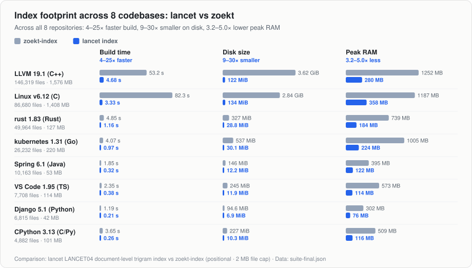
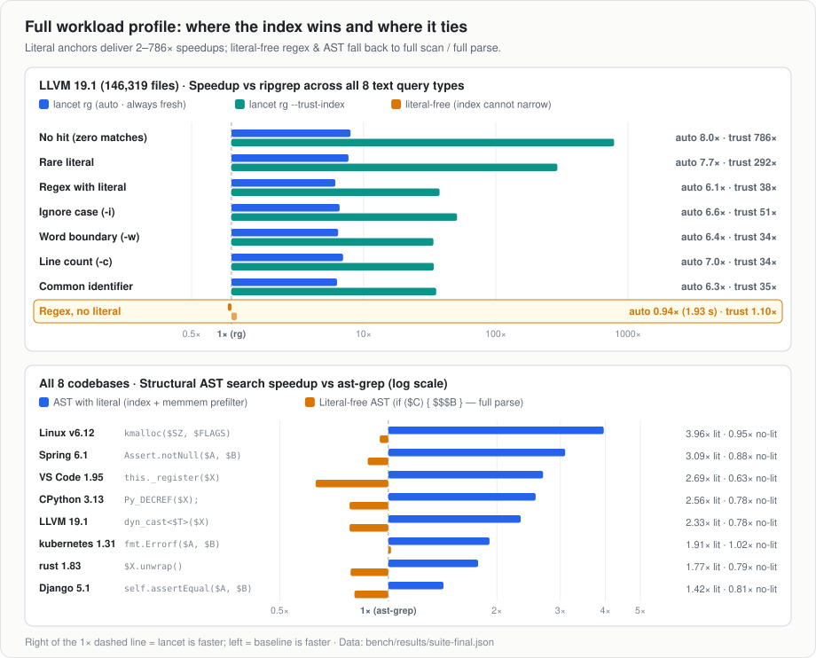

Architecture & Internals
Benchmarks & Honest Competitor Comparison
Every win and every loss measured on real repositories against ripgrep, zoekt, ast-grep, tgrep, grix, aft, and probe.
Measured on Apple M4 Pro (arm64 macOS), warm filesystem cache, median of 5 hyperfine -N runs. Text search outputs across auto, --trust-index, and --no-index were verified byte-for-byte against ripgrep 15.2.


Core 8-Codebase Benchmark Suite (SUITE.md)#
| Corpus | Files | lancet Index (build · disk · peak) | zoekt Index (build · disk · peak) | auto vs rg | trust vs rg | AST vs ast-grep |
|---|---|---|---|---|---|---|
| Linux v6.12 (C) | 86,680 | 3.3 s · 134 MB · 358 MB | 82 s · 2.9 GB · 1.2 GB | 5.8–7.5× | 13–403× | 4.0× |
| LLVM 19.1 (C++) | 146,319 | 4.7 s · 122 MB · 280 MB | 53 s · 3.7 GB · 1.3 GB | 6.1–8.0× | 34–786× | 2.3× |
| rust 1.83 (Rust) | 49,964 | 1.2 s · 29 MB · 184 MB | 4.9 s · 327 MB · 739 MB | 1.5–9.6× | 2–273× | 1.8× |
| kubernetes 1.31 (Go) | 26,232 | 1.0 s · 30 MB · 224 MB | 4.1 s · 537 MB · 1.0 GB | 3.5–5.8× | 9–210× | 1.9× |
| VS Code 1.95 (TS) | 7,708 | 0.4 s · 12 MB · 114 MB | 2.4 s · 245 MB · 573 MB | 2.1–3.9× | 4–63× | 2.7× |
| Django 5.1 (Python) | 6,815 | 0.2 s · 7 MB · 76 MB | 1.2 s · 95 MB · 302 MB | 2.4–2.9× | 10–60× | 1.4× |
| CPython 3.13 (C/Py) | 4,882 | 0.3 s · 10 MB · 116 MB | 3.7 s · 227 MB · 509 MB | 3.0–5.4× | 5–30× | 2.6× |
| Spring 6.1 (Java) | 10,163 | 0.3 s · 12 MB · 122 MB | 1.9 s · 146 MB · 395 MB | 2.9–5.3× | 6–95× | 3.1× |
Indexed & Agent Tool Comparison (COMPETITORS.md)#
Reproducible harness: bench/competitors_agents.py (full raw tables).
Post-Edit 0 ms Freshness & Parity (20 edited .py files in Django)#
| Tool / Mode | Finds New (0 ms) | Finds Deleted (0 ms) | 20/20 rg Match-Count Parity |
|---|---|---|---|
lancet rg (auto) | 20 / 20 | 0 / 20 | 20 / 20 |
lancet rg --trust-index | 0 / 20 | 0 / 20 | 20 / 20 |
grix (auto) | 20 / 20 | 0 / 20 | 19 / 20 (missed 2 lines on LLVM no-lit regex) |
tgrep (serverless) | 0 / 20 | 0 / 20 | 20 / 20 |
tgrep serve (daemon) | 20 / 20 | 0 / 20 | 20 / 20 |
aft (resident stdio + watcher) | 0 / 20 (needs ~1.5 s settle) | 0 / 20 | Under-indexed (~49,031 vs 49,964 files on Rust) |
Honest Summary: Wins & Losses#
Read both sides carefully
- Where Lancet leads: 20/20 0 ms daemonless freshness; 1/3–1/7× smaller disk index than
aft/tgrep(141.8 MB vs 368.5 MB / 955.2 MB on Linux); ~1/3× peak build RAM vsgrix(353.5 MB vs 1,001.6 MB on Linux); fastest literal AST search across Django, Rust, Linux, and LLVM; one binary covering read + edit + patch + rename. - Where daemon or trust-only tools win:
tgrep serve(resident daemon) beats daemonlesslancet autoon Rust (119.2 ms vs 508.7 ms) and LLVM (19.9 ms vs 295.8 ms)regex with literal, and small literal-free regexes (Django 15.4 ms, Rust 60.9 ms).grix --no-auto-indexis faster thanlancet --trust-indexon Linux rare literal (11.5 ms vs 43.6 ms). Residentaft(587–1,260 MB RAM) is faster on Rust rare literal (8.5 ms vs 73.5 ms). Literal-free regexes and literal-free AST patterns run nearrg(down to 1.4× slower) andast-grep(0.6–1.0×).